Everything on Jobs
In the office app, press Help and type everything on jobs
: the tour plays on your own screen, with your own data.
-
 1
1Jobs
Every sold job, from "to schedule" to "paid". A job is made when an estimate is marked Won, with one work item per estimate section.
-
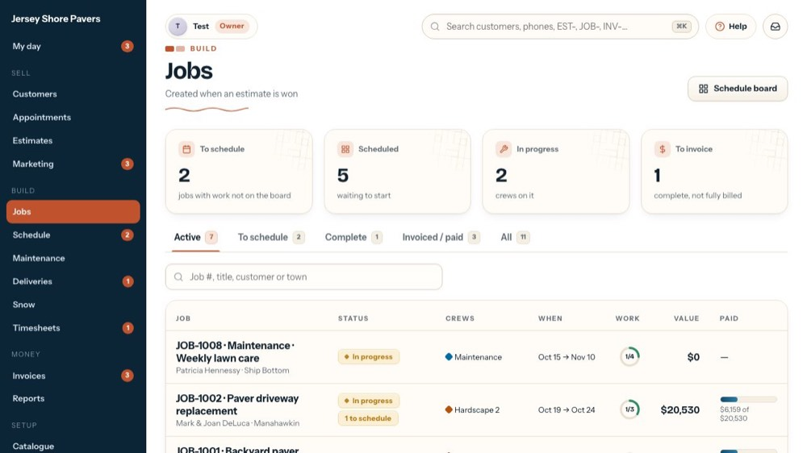
2Schedule board
Opens the crew board, where each piece of work gets its crew and its days.
-
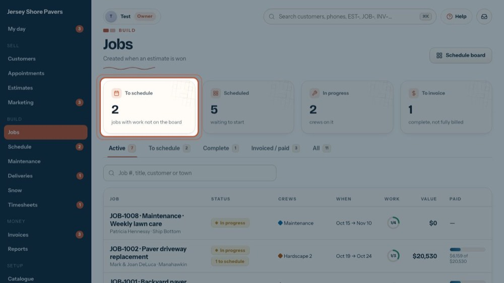
3To schedule
Jobs with work that has no crew or start day yet. Click the box to list just those jobs.
-
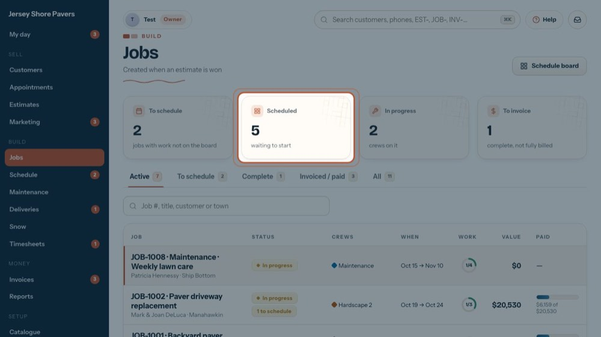
4Scheduled
Jobs on the board, waiting for the crew to start.
-
 5
5In progress
Jobs a crew has started (the crew lead presses Start on the phone, or the office does on the job).
-
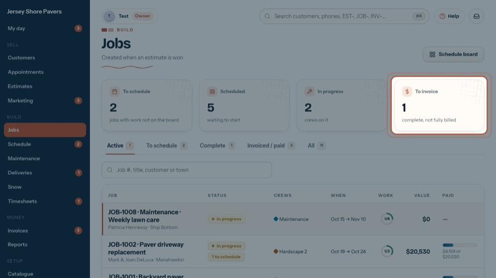
6To invoice
Jobs whose work is all complete but not fully billed yet. Click the box to list them.
-
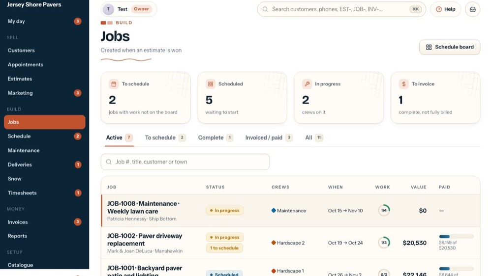
7Active jobs
The list opens on Active: sold, scheduled and in progress. The number on each tab is how many jobs are in it.
-
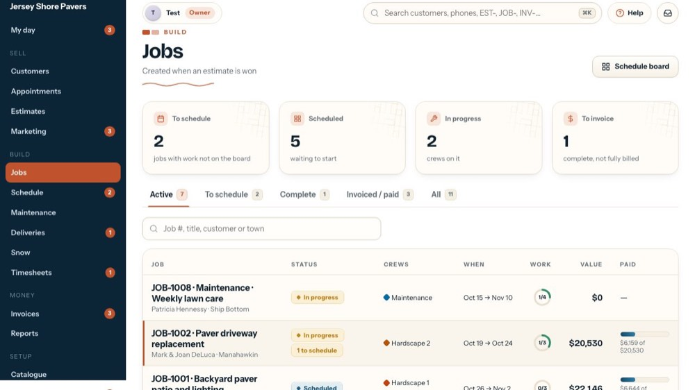
8To schedule tab
Jobs with work still to put on the board, approved change orders included.
-
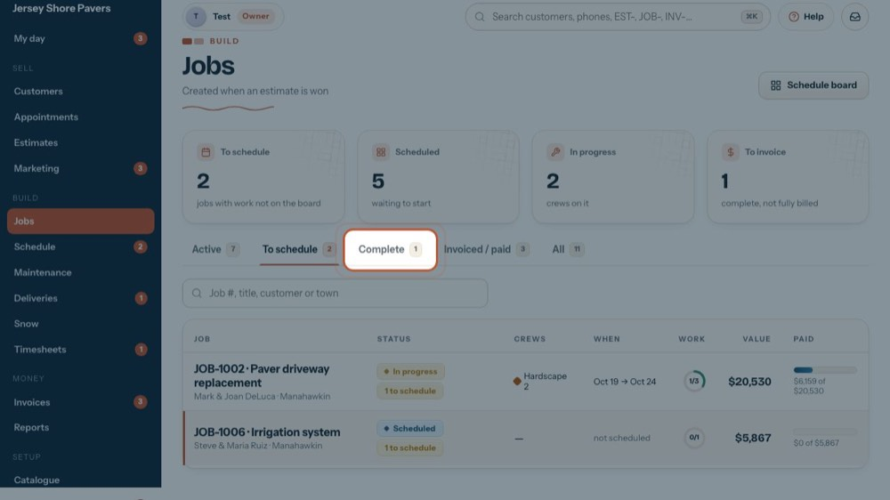
9Complete
Finished jobs waiting to be invoiced.
-
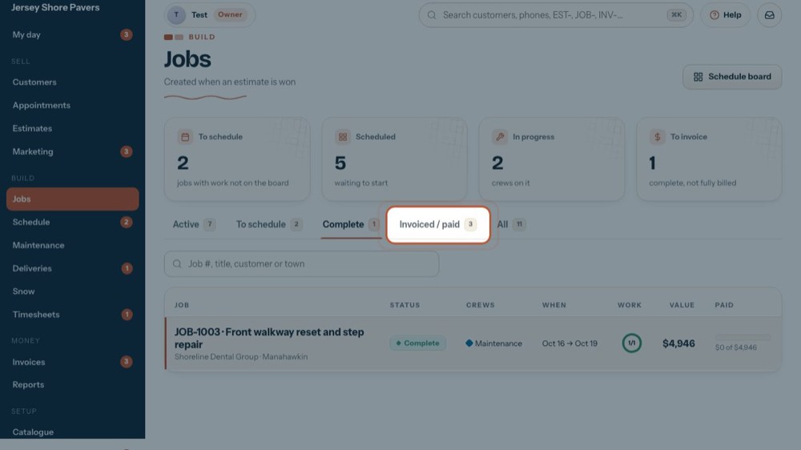
10Invoiced / paid
Jobs that are billed, and the ones paid in full.
-
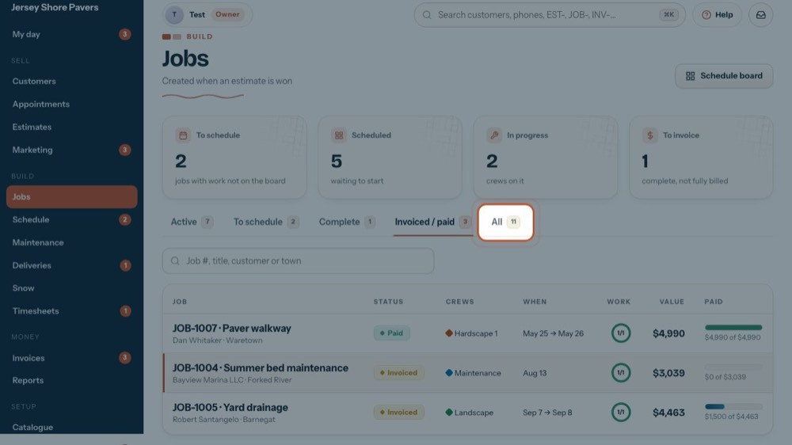
11All
Every job, whatever its status.
-
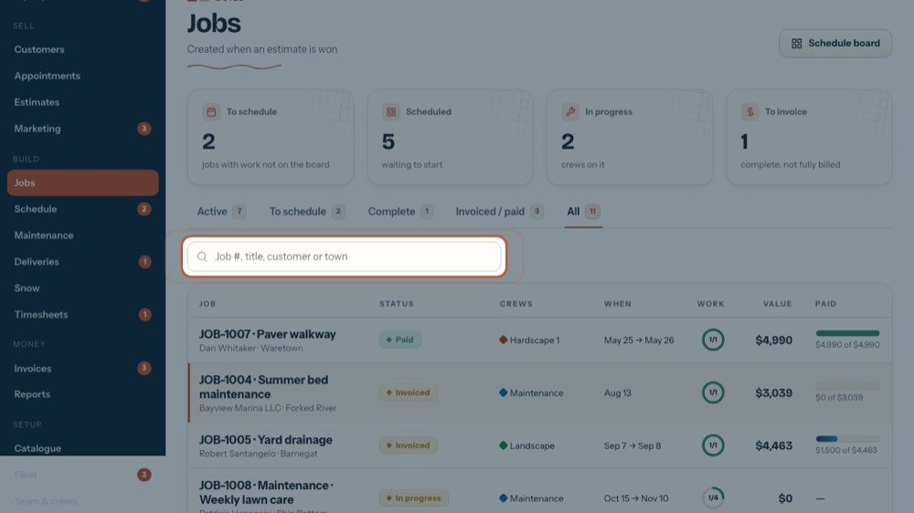
12Search the list
Type a job number, title, customer or town. The list filters as you type, inside the tab you are on.
-
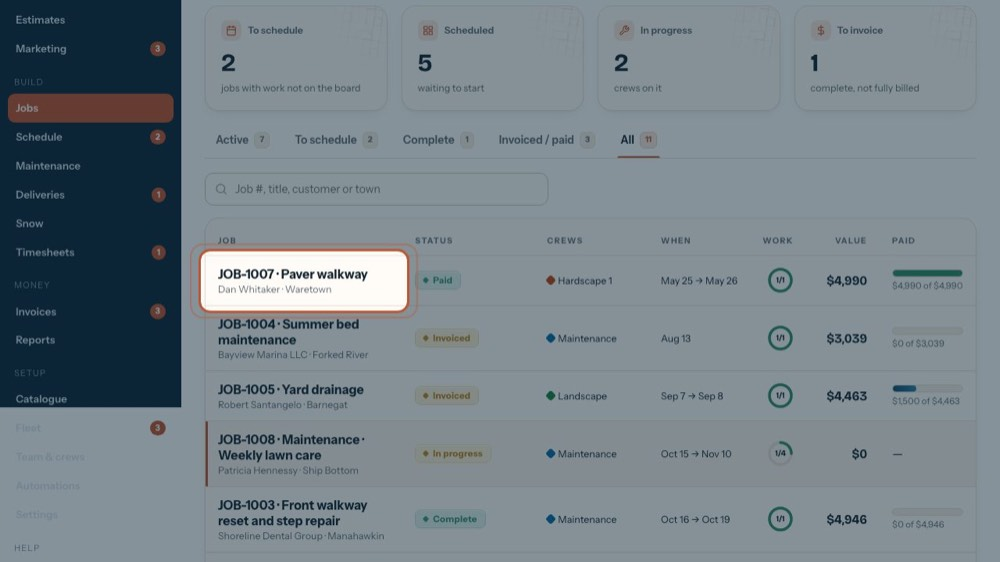
13Job, customer, town
The job number and title, with the customer and the town under it.
-
 14
14Status and flags
Sold, Scheduled, In progress, Complete, Invoiced or Paid. Tags: "1 to schedule" = work not on the board yet; a red Permit hold = it can't start yet.
-
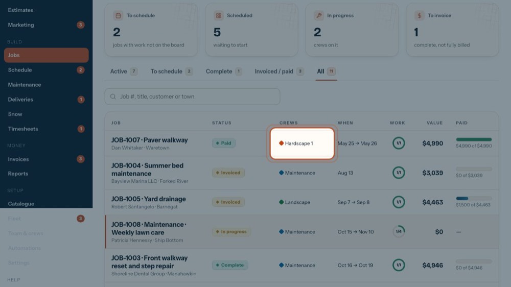
15Crews
The crews doing the work, each with its colour from the board.
-
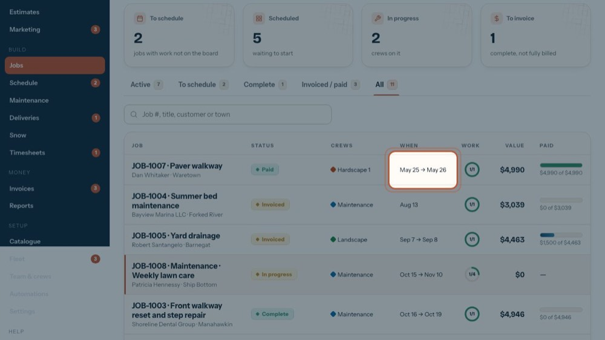
16When
The first and last day on the board, or "not scheduled".
-
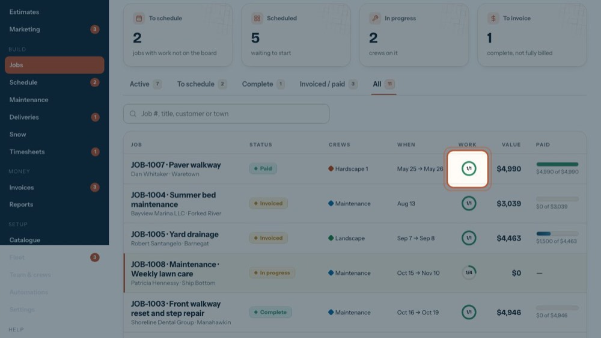
17Work done
The ring shows work items complete out of the total: 1/3 means one of three is done.
-
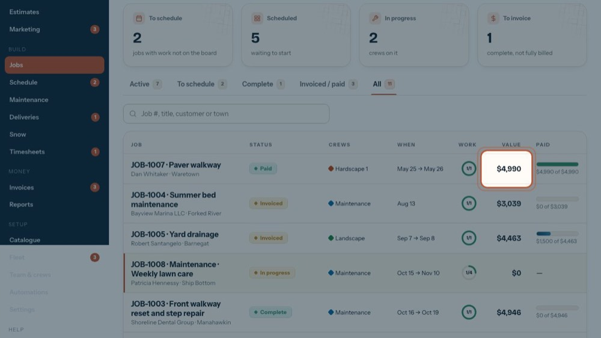
18Value
The contract value. Only people who see money see this column and the next one.
-
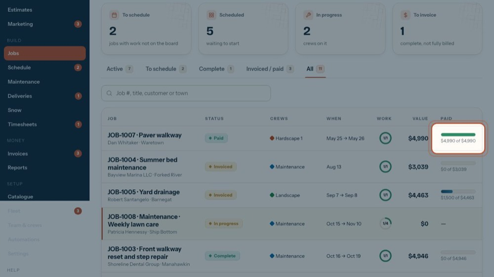
19Paid so far
How much of the value is paid. The bar turns green when it is paid in full.
-
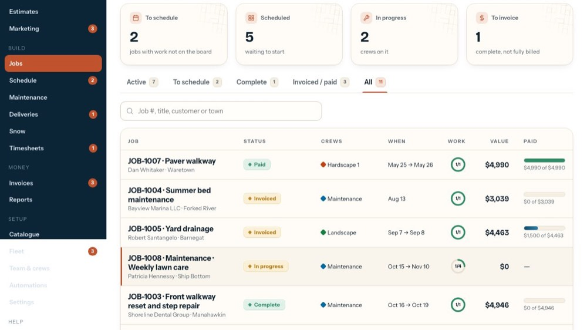
20Open a job
Click a row to open the job: work, crews, change orders, costs, payments and the folder. The list shows 50 at a time, with Previous / Next under it.